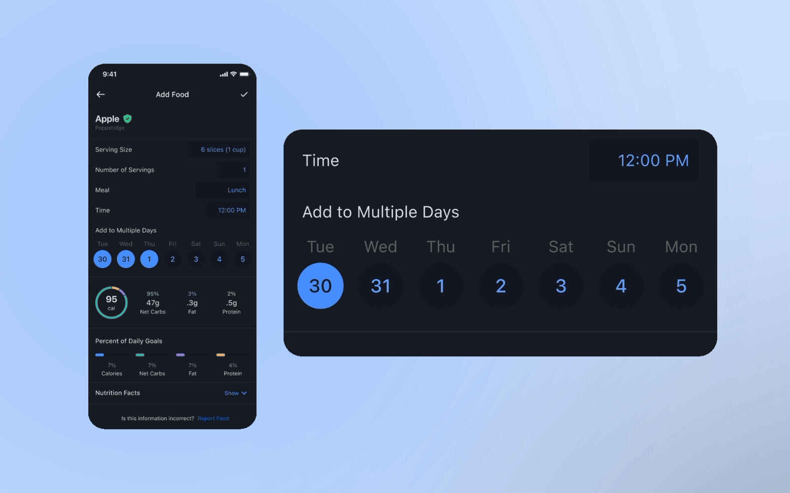
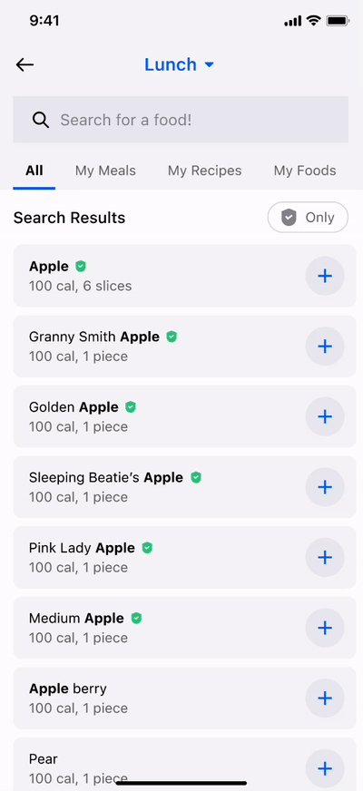

Creating a top 2 Premium feature.

The challenge
The product and design teams at MyFitnessPal were charged with increasing first-7-day food logs.
Being on the Logging team at the time, our goal was to make the process of logging food easier and quicker. Our UX research and data teams had years of qualitative and quantitative data about user logging behavior. After reviewing it alongside our competitive research, we came up with a list of potential ideas.
The list included bigger ideas like voice logging and AI, but for this challenge, we had to solve a problem that would provide a shorter-term “win” for our users.
The problem: food logging is repetitive
We knew from research that a high percentage of users found the MyFitnessPal food logging experience tedious and difficult.
Imagine you had a meeting at the same time Monday through Friday, every week, but you couldn't set it to repeat. How tedious would it be to add that as a new meeting manually every single time? We wanted to offer a smarter approach for logging repetitive foods.
{{ s.d }}
1st Proposal: Repeat food logging
The first solution we tested was Repeat Food Logging. We hypothesized it would make logging less repetitive by letting users select the day(s), time, and optional end date they consume a food or drink.
Users would only have to log the unique foods eaten that day — more convenient for them, and continuous data for the app to communicate with them about (nutritional feedback, progress, recommendations).
During discovery, however, we realized the repeat feature would take much more backend work than anticipated.
The MVP: Multi-day food logging
Engineering found that limiting the repeat log to the next 7 days made for a much more feasible test of whether to invest in the full Repeat Log feature.
To save more engineering time and get the test out the door, we started with a proof of concept available only on the Food Detail page. This limited discoverability, but let us measure how many users who reached that page chose to multi-log.
We then moved on to some quick usability testing.

UX research says: it’s a go!
Active users all liked the design, but, not surprisingly, were mixed on whether they’d use it.
Some users appreciate the process of food logging — the satisfaction and mindfulness it brings to food choices. Others find it tedious and welcome any way to alleviate the repetition. For these users, this was a huge unlock.
Results
Multi-day log becomes the #2 feature used by Premium users.
We launched the feature as an A/B test and quickly saw a 4% increase in day 0 food logs — significant for the MyFitnessPal app. Within its first year, it became one of the most-used features among Premium subscribers, second only to MyFitnessPal’s legacy barcode scanning.